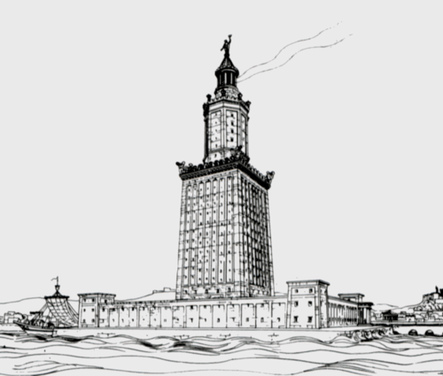

 ППісля завоювання Єгипту у 332 році до н. е. Александр Македонський вирішив заснувати там нову столицю, що була названа на його честь Александрією. Місце для нового міста обиралося ретельно. Замість того, щоб заснувати його у дельті Нілу, було обрано район, розташований за двадцять миль на захід, щоб мул і бруд, принесені річкою, не засмічували міську гавань. Південна околиця міста закінчувалася озером Мареотіс. Після того, як був побудований канал між озером і Нілом, місто мало дві гавані: одна для руху по Нілу, інша для середземноморської морської торгівлі. Александр помер близько 323 року до н.е, і будівництво міста завершувалося Птолемеєм II. За його правління Александрія досягла багатства і процвітання. У міру розвитку судноплавства й морської торгівлі все гостріше відчувалася потреба у маяку, який серед підводних скель і мілин вказував би суднам безпечний шлях в Александрійську гавань. Тому у 290 році до н. е. на східному краї острова Фарос, що лежав у морі на відстані 7 стадій (1290 м), правитель Єгипту Птолемей I наказав побудувати величезний маяк. Творцем цього шедевру інженерного та архітектурного мистецтва вважається Сострат Кнідський. Роботи тривали трохи більше 20 років, і в підсумку Александрійський маяк став першою в світі будовою подібного типу і найвищою будівлею античного світу, крім пірамід Гізи. Система сигнальних вогнів на маяку з'явилася лише в I столітті до н. е. храмі.